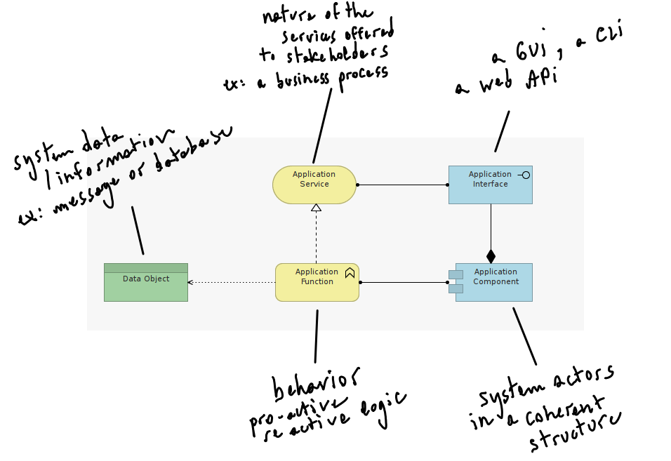
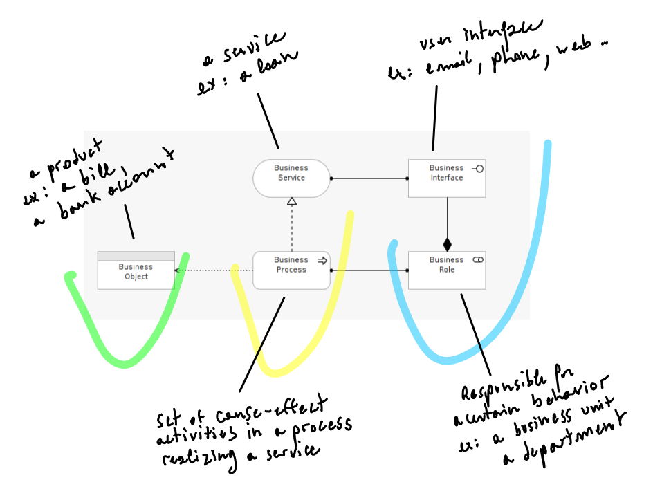
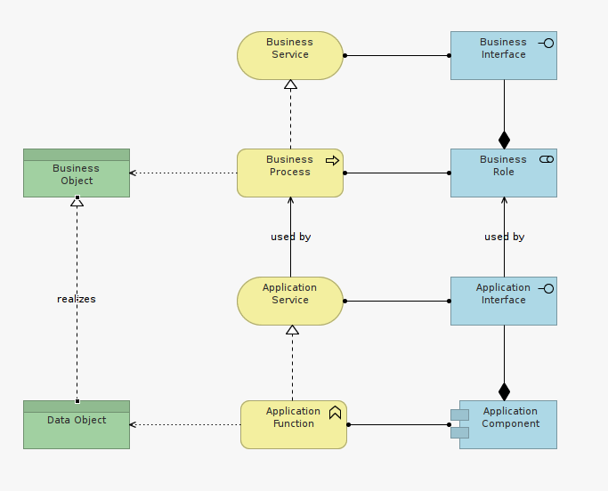
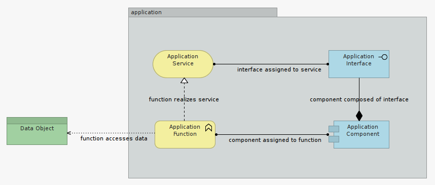

Objectives
In this lab, you will model your first application - a Web Portlet named Daily Physical Routine Advisor.
Fundamentals
When Architecting enterprise solutions, we want to model behavior separately from structure.
As Architects, our goal is to always be in a position to understand a solution design in the CONTEXT it was prepared.
Your design tells a story, from which context and structure emerges for a reviewer to understand what you mean.
This is important because context changes over time (i.e. new process, new environment, new roles, new system contraints, new requirements, ..the list goes on).
A design that was fit for purpose and complete yesterday, may not be any longer considering present context.
Separating behavior from structure helps to understand the validity of architectural decisions at a point in time.
As applications get more complex, get combined, and get used in many different was (i.e. many contexts) by many actors (i.e. users or systems), separating behavior from structure helps surfacing gaps in the architecture.
Step 1
First let's compose a Basic Application template to describe what our application aims to achieve.
Let's approach the problem in terms of "who acts on what": - (1.) its structure (who), - (2.) its behavior (acts on), and - (3.) its data (on what).

To re-enforce the distinction between active (who) elements from behavioral (acting) elements, let's agree on some simple color conventions.
Pastel green elements in the model will represent a passive data-at-rest source of information informing the behavior of the application.
Pastel Blue elements in the model will represent the actors ('who') constituents of design structure.
Pastel Yellow elements in the model will represent the behavioral aspects of the actors elements.
Here is the resulting template.

The two yellow and two blue elements in the image together make up the core of the application model, here grouped together in a grey rectangle.
Let's annotate the elements of our first model.

Important note: You will notice that this proposed color-scheme doesn't mean the same as the color scheme proposed in the Archi IDE by default. In Archi, colors are mapped to Layers. In our case. we are mapping colors to element types. Both conventions are arbitrary, however ours will prove to be more meaningful as our models get complex.
Step 2
Second let's compose a Basic Business Process template to describe the way an application is used by its business users.
Once again let's think in terms of "who acts on what":
- (1.) its actors (who),
- (2.) its process (acts on),
- (3.) its resulting product/service (on what).

To re-enforce the distinction between active (who) elements from behavioral (acting) elements, let's apply our previously described color conventions.

Exercise A
Consider the relationships between model elements in Figure 1e. Can you formulate the dependencies between these elements, taking inspiration from the labels of Figure 1a?
Step 3
Third, let's fill the missing links between business ant IT by mapping Application Structure with Business Structure, Application Behavior with Business Behavior, and Application Information with Business Product/Services.

Figure 1f demonstrates a basic template describing how IT (here a single enterprise application) offers supporting services to a business unit, in the context of a business process.
These templates are basic. In a real situation, As process(es) complexity and application(s) complexity increases, the principle exposed in figure 1f remains valid.
Any missing dependencies, any missing element, surfaced while mapping the application in its context of use outlines an architectural gap requiring attention.
Step 4
In this Step we will model the key constituent of a fictive application using the template described in Figure 1b, provided as a reminder below.

This application - a Web Portlet named DailyPhysicalRoutineAdvisor (DPRA) - will be quite small and simple.
DPRA aims to advise on what your daily physical routine should be, based on a number of factors, of which weight and size are strictly mandatory to start with.
The application is made of one single component, providing one simple Mobile Phone Interface to users, and relying on one persistent data source.
Based on the physiological parameters entered by its user, DPRA reaches to a data source - a decision table - to evaluate the daily exercise routine to prescribe as an output.
So, in essence, our application is a glorified calculator, nothing more. Its main component defines computations. Its function depends of the physiological parameters a user is willing to share. Its interface is a Mobile Application (Web, iOS or Android), and its service is... its very purpose: advising users on what their daily physical routine should be.
Exercise B
Taking Figure 1b as reference, model DPRA application.
Name model elements so these best reflect what they represent in relation to their element type.
Use the NOTE element to annotate your first model and explain your design choices.